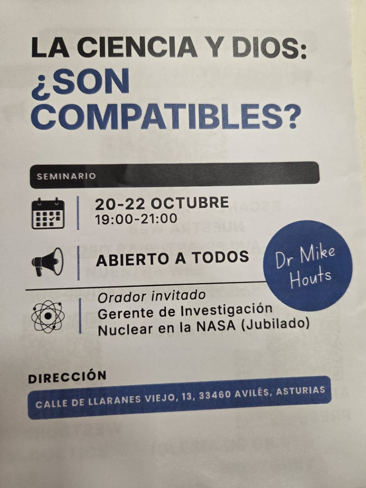

SEMINARIO · AVILÉS
La ciencia y Dios:
¿son compatibles?
Una conversación abierta sobre la ciencia, la fe y las preguntas que compartimos.
INFORMACIÓN PRÁCTICA
Sobre el seminario.
Un seminario de tres tardes para conversar sobre la ciencia y la fe. Entrada gratuita, abierta a todos y sin inscripción previa.
Fecha y horario
20–22 de octubre de 2026
19:00–21:00 · hora de Asturias
Lugar
Calle de Llaranes Viejo, 13
33460 Avilés, Asturias
Ponente invitado
Dr. Mike Houts
Exgerente de investigación nuclear de la NASA (jubilado)
Acceso
Entrada gratuita
Abierto a todos · Sin inscripción previa
La dirección del seminario es distinta del lugar de nuestras reuniones dominicales. Si tienes preguntas, llama al +34 602 59 45 41.
Ver el cartel original del seminario

LA PREGUNTA
Dos formas de mirar el mundo. Una conversación abierta.
¿Cómo se relacionan lo que descubrimos sobre el universo y lo que creemos acerca de Dios?
Te invitamos a escuchar, preguntar y conversar con respeto. No hace falta tener todas las respuestas para participar.
¿Tienes alguna pregunta? Escríbenos ↗MATERIAL ASOCIADO
Para seguir explorando.
Recursos en español para profundizar en las preguntas del seminario y en la fe cristiana.
Apologetics Press en Español
Artículos, videos y libros sobre la fe, la Biblia y preguntas acerca de Dios y la creación.
Visitar recurso apologeticspress.orgEl plan de Dios para ti
Una página en español de Westbury Church of Christ para explorar el mensaje cristiano.
Visitar recurso westburycoc.com¿Es el Génesis historia?
Una película para acompañar la reflexión sobre el Génesis, la ciencia y la fe.
Ver en YouTube youtube.com